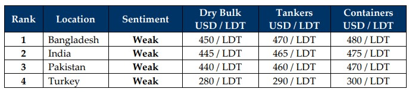

inWeekly Demolition Reports03/02/2025

Despite a frantic start to 2025 that saw a marked return of recycling tonnage at the bidding tables, SNP activity across theglobal ship recycling spectrum eased further this week as Chinese New Year holidays descended upon the world. It is the “Year of the Snake” and it is indeed expected to be a far busier one than the preceding years, with record low volumes of supply and an ensuing inertia that eventually led to the shuttering of yards across the major global ship recycling destinations in 2024. Notwithstanding, should supply become unsustainable, this may apply even further pressure on recycling markets and eventually affect ship owners down the line, who will then have no choice but to bite the bullet of chasing falling prices in markets. So far, India & Bangladesh have shouldered the increasing number of vessels since October of 2024, when Pakistani recyclers all but disappeared from the bidding tables on the back of unfolding domestic financial crises. However, the Gadani Gang is now looking to get back into the game once again, at a time when locally favored dry bulk (Panamax and handy bulkers) vessels and LNG tankers have been much of the ongoing flavor of recycling sales so far this year (see port reports below), with containers expected further down the road given the recent easing of traffic in the Red Sea shipping lanes. Yet, on a global scale, all is not well as the saying “The Rise of the Fall” seems to be unfolding across as President Trump’s Tariffs to the tune of 25% on Mexico and Canada + an additional 10% on Canadian energy exports and a blanket 10% tariff on China that is due to set into effect on February 4th, has already seen global economies reacting and leaders of Canada & Mexico promising counter-tariffs on American exports.
The Baltic Dry Bulk Index also gained ground as rates across the dry bulk categories displayed signs of positivity / improvement this week, which might still be late for a bulk of the already-aged still-trading units that are being compelled to reconsider their immediate futures. Making matters for inflation and global economies were oil futures that are expected to surge and even reported firming this week as levels approached USD 74/barrel once again, and Week 6 is likely setting itself up to be the pivotal point of global Tariff Wars of 2025. This also seems to be affecting the performance of the U.S. Dollar, which although seems to have made minor improvements against most of the major ship recycling nation currencies by the end of the week, actually started to decline across the board early in the week with the uncertainty of the upcoming Tariffs, which even resulted in flattening steel plate prices at all ship recycling nations, except India where expectedly, they declined. The emergence of recycling traffic has also seen a remarkable amount of LDT at both India & Bangladesh this week, and this is not only happening amidst declining vessel offers that have cooled by up to USD 30/LDT over the course of January, but also from the few recyclers (in Bangladesh & Pakistan) who are financially secure enough to even be at the tables and drop an offer.
Tariffs on Chinese steel stand to be of key concern to the sub-continent ship recycling markets and when China starts dumping their surplus post-tariff steel, it will be a critical factor in demand and vessel pricing for much of this year. Finally, Turkey at the far end was no stranger to the “doom and gloom” theme event as even though their plate prices remain relatively unchanged, amidst an improvement in supply this week, offers of about USD 30/Ton lower shocked the industry as markets across the board seem to be falling in unison. Tastes like 2008 all over again.
For Week 5 of 2025, GMS Market Rankings / vessel indications are as below.

📄 Download PDF: Ship-recycling-market-insight-Week-05-01-31-2025-Slippery_as_as_Snake.pdfSource: GMS,Inc.https://www.gmsinc.net/gms_new/index.php/web